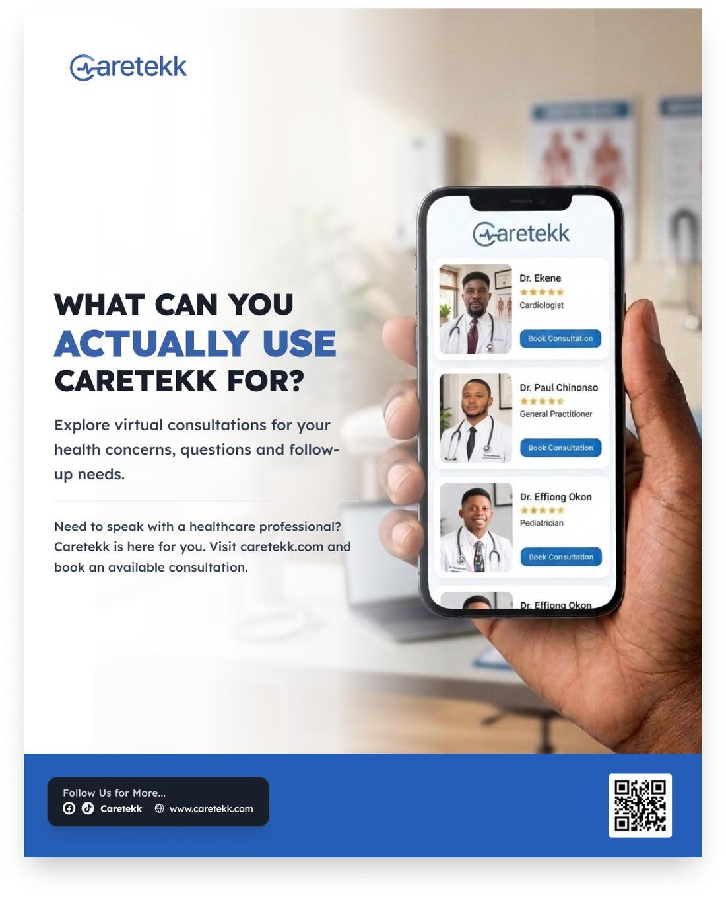

Archive › Live brand & social design
Caretekk Health
Health awareness campaign for a telehealth brand

Overview
An ongoing social campaign for Caretekk, a Nigerian telehealth and home-care platform — turning clinical guidance into clear, shareable posts people actually act on.
Caretekk connects people to doctors and home nurses, but the hardest part isn't the booking flow — it's getting people to take a symptom seriously in the first place. This campaign exists to close that gap: to make health guidance feel approachable, urgent where it needs to be, and impossible to scroll past.
I designed the visual system behind the brand's awareness posts — the typography, colour, and layout language that carries everything from World Arthritis Day to a simple reminder that you can book a consultation today.
Health communication, not decoration
Health posts fail when they look like adverts. Each piece leads with the symptom the reader recognises — joint pain, hot flashes, a check-up they've put off — and earns attention before it asks for anything.
The hierarchy is deliberately plain: a bold claim, the reason to take it seriously, then one clear action. Nothing competes with the message.
A system that scales
Because the campaign runs continuously, the layout had to be repeatable without looking repetitive. A consistent grid, a restrained type palette and a single accent colour let new posts slot in quickly while still reading as one brand.
That consistency matters more here than anywhere: a health message loses credibility the moment it looks thrown together.
Designed to be shared
The most effective posts in the set end with a direct prompt — send this to someone who keeps saying "it's just age." That's the real distribution strategy: design that people forward to the person who needs it.
Gallery